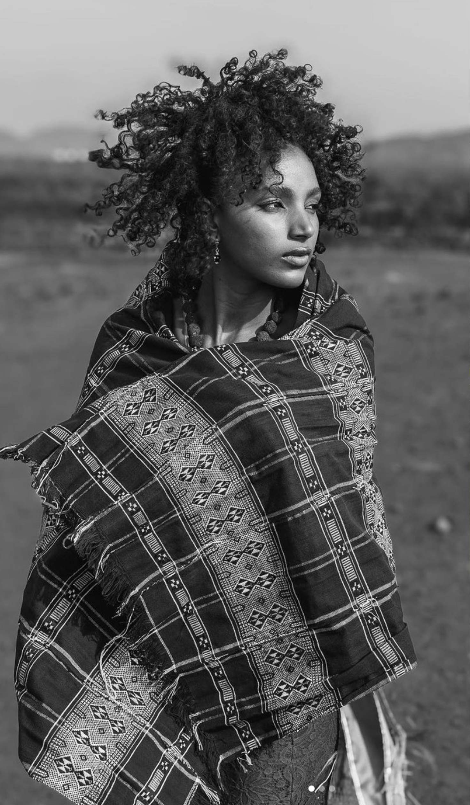

Pour créer mon logo, j’ai voulu concevoir un symbole qui incarne mon identité, mes valeurs et mes influences graphiques. Inspirée par mes racines capverdiennes, j'ai intégré des éléments du motif traditionnel Pano di terra.
Le pano di terra est un tissu généralement fabriqué à la main
sur des métiers à tisser. Il se caractérise
par des motifs géométriques et des grilles. Utilisé dans des vêtements, des accessoires et des décorations, le Pano di terra est un symbole culturel fort pour les Capverdiens.
Il représente leur histoire, leur identité, et leur
savoir-faire artisanal, qui s’est transmis de génération
en génération.

Les lignes représentent à la fois le tissage ainsi
que les lettres S et D. À l’image du Pano di terra, le logo intègre des traits de deux différentes épaisseurs.
Utiliser différentes couleurs permet de bien distinguer le tissage des lignes, d’où la nécessité des trois couleurs: le fond, les lettres (couleur plus claire) et le tissage (couleur plus sombre).
Pour les déclinaisons sur des supports comme les cartes de visite, j'ai conçu un motif qui reprend des éléments graphiques inspirés du pano di terra et du tissage. Les différents motifs et déclinaisons de couleurs apportent une richesse à mon identité et évoquent la polyvalence de mon travail.
Petit logo, les origines
Identité visuelle
Illustrator
Pour créer mon logo, j’ai voulu concevoir un symbole qui incarne mon identité, mes valeurs et mes influences graphiques. Inspirée par mes racines capverdiennes, j'ai intégré des éléments du motif traditionnel Pano di terra.
Le Pano di terra est un tissu généralement fabriqué à la main sur des métiers à tisser. Il se caractérise par des motifs géométriques et des grilles. Utilisé dans des vêtements, des accessoires et des décorations, le Pano di terra est un symbole culturel fort pour les Capverdiens. Il représente leur histoire, leur identité, et leur savoir-faire artisanal, qui se transmet de génération en génération.
Les lignes représentent à la fois le tissage ainsi que les lettres S et D. À l’image du Pano di terra, le logo intègre des traits de deux différentes épaisseurs.
Utiliser différentes couleurs permet de bien distinguer le tissage des lignes, d’où la nécessité des trois couleurs : le fond, les lettres (couleur plus claire) et le tissage (couleur plus sombre).
Pour les déclinaisons sur des supports comme les cartes de visite, j'ai conçu un motif qui reprend des éléments graphiques inspirés du Pano di terra et du tissage. Les différents motifs et déclinaisons de couleurs apportent une richesse à mon identité et évoquent la polyvalence de mon travail.